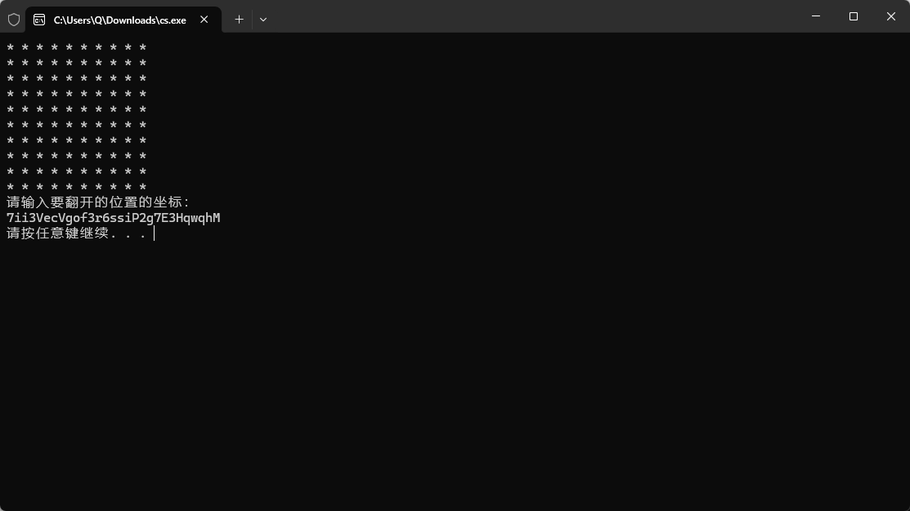

GFSJ1101-【Mine-】
游戏题
依旧游戏题目 依旧patch 简单游玩一下发现是一个扫雷吧 然后查看main函数 能发现是一个100格子 然后75个空格 25个雷 全部点开完成后给flag
int __fastcall main(int argc, const char **argv, const char **envp)
{
unsigned int v3; // eax
__int64 v4; // rax
__int64 v5; // rax
_BYTE *v6; // rax
__int64 v7; // rax
__int64 v8; // rax
__int64 v9; // rax
__int64 v10; // rax
__int64 v11; // rax
__int64 v12; // rax
int v14; // [rsp+28h] [rbp-58h] BYREF
int v15; // [rsp+2Ch] [rbp-54h] BYREF
int v16; // [rsp+30h] [rbp-50h]
unsigned int v17; // [rsp+34h] [rbp-4Ch]
unsigned int v18; // [rsp+38h] [rbp-48h]
int v19; // [rsp+3Ch] [rbp-44h]
int v20; // [rsp+40h] [rbp-40h]
int i1; // [rsp+44h] [rbp-3Ch]
int nn; // [rsp+48h] [rbp-38h]
int i3; // [rsp+4Ch] [rbp-34h]
int i2; // [rsp+50h] [rbp-30h]
int i4; // [rsp+54h] [rbp-2Ch]
int mm; // [rsp+58h] [rbp-28h]
int kk; // [rsp+5Ch] [rbp-24h]
int jj; // [rsp+60h] [rbp-20h]
int ii; // [rsp+64h] [rbp-1Ch]
int n; // [rsp+68h] [rbp-18h]
int m; // [rsp+6Ch] [rbp-14h]
int k; // [rsp+70h] [rbp-10h]
int v33; // [rsp+74h] [rbp-Ch]
int j; // [rsp+78h] [rbp-8h]
int i; // [rsp+7Ch] [rbp-4h]
_main();
memset_0(grid, 0, 0x190u);
memset_0(randMark, 0, sizeof(randMark));
memset_0(vis, 0, sizeof(vis));
for ( i = 0; i <= 9; ++i )
{
for ( j = 0; j <= 9; ++j )
showUs[100 * i + j] = 42;
}
v3 = time(nullptr);
srand_0(v3);
v33 = 0;
do
{
v20 = rand_0() % 10;
v19 = rand_0() % 10;
if ( randMark[100 * v20 + v19] != 1 )
{
randMark[100 * v20 + v19] = 1;
++v33;
}
}
while ( v33 != mine_sum );
res = 0;
for ( k = 0; k <= 9; ++k )
{
for ( m = 0; m <= 9; ++m )
{
if ( randMark[100 * k + m] )
grid[10 * k + m] = -1;
}
}
for ( n = 0; n <= 9; ++n )
{
for ( ii = 0; ii <= 9; ++ii )
{
if ( grid[10 * n + ii] != -1 )
{
for ( jj = 0; jj <= 7; ++jj )
{
v18 = *((_DWORD *)&dir + 2 * jj) + n;
v17 = dword_475044[2 * jj] + ii;
if ( v18 <= 9 && v17 <= 9 && grid[10 * v18 + v17] == -1 )
++grid[10 * n + ii];
}
}
}
}
for ( kk = 0; kk <= 9; ++kk )
{
for ( mm = 0; mm <= 9; ++mm )
{
v4 = std::operator<<<std::char_traits<char>>(refptr__ZSt4cout, (unsigned int)showUs[100 * kk + mm]);
std::operator<<<std::char_traits<char>>(v4, &unk_48B000);
}
((void (__fastcall *)(std::ostream *const))refptr__ZSt4endlIcSt11char_traitsIcEERSt13basic_ostreamIT_T0_ES6_)(refptr__ZSt4cout);
}
v5 = std::operator<<<std::char_traits<char>>(refptr__ZSt4cout, &unk_48B002);
((void (__fastcall *)(__int64))refptr__ZSt4endlIcSt11char_traitsIcEERSt13basic_ostreamIT_T0_ES6_)(v5);
while ( 100 - mine_sum != res )
{
v7 = std::istream::operator>>(refptr__ZSt3cin, &v15);
std::istream::operator>>(v7, &v14);
if ( grid[10 * v15 + v14] == -1 )
{
v8 = std::operator<<<std::char_traits<char>>(refptr__ZSt4cout, &unk_48B01D);
((void (__fastcall *)(__int64))refptr__ZSt4endlIcSt11char_traitsIcEERSt13basic_ostreamIT_T0_ES6_)(v8);
goto LABEL_67;
}
if ( vis[100 * v15 + v14] || grid[10 * v15 + v14] <= 0 )
{
if ( !vis[100 * v15 + v14] && !grid[10 * v15 + v14] )
{
bfs(v15, v14);
system_0("cls");
for ( nn = 0; nn <= 9; ++nn )
{
for ( i1 = 0; i1 <= 9; ++i1 )
{
v11 = std::operator<<<std::char_traits<char>>(refptr__ZSt4cout, (unsigned int)showUs[100 * nn + i1]);
std::operator<<<std::char_traits<char>>(v11, &unk_48B000);
}
((void (__fastcall *)(std::ostream *const))refptr__ZSt4endlIcSt11char_traitsIcEERSt13basic_ostreamIT_T0_ES6_)(refptr__ZSt4cout);
}
v12 = std::operator<<<std::char_traits<char>>(refptr__ZSt4cout, &unk_48B002);
((void (__fastcall *)(__int64))refptr__ZSt4endlIcSt11char_traitsIcEERSt13basic_ostreamIT_T0_ES6_)(v12);
}
}
else
{
++res;
vis[100 * v15 + v14] = 1;
showUs[100 * v15 + v14] = LOBYTE(grid[10 * v15 + v14]) + 48;
system_0("cls");
for ( i2 = 0; i2 <= 9; ++i2 )
{
for ( i3 = 0; i3 <= 9; ++i3 )
{
v9 = std::operator<<<std::char_traits<char>>(refptr__ZSt4cout, (unsigned int)showUs[100 * i2 + i3]);
std::operator<<<std::char_traits<char>>(v9, &unk_48B000);
}
((void (__fastcall *)(std::ostream *const))refptr__ZSt4endlIcSt11char_traitsIcEERSt13basic_ostreamIT_T0_ES6_)(refptr__ZSt4cout);
}
v10 = std::operator<<<std::char_traits<char>>(refptr__ZSt4cout, &unk_48B002);
((void (__fastcall *)(__int64))refptr__ZSt4endlIcSt11char_traitsIcEERSt13basic_ostreamIT_T0_ES6_)(v10);
}
}
v16 = std::string::length((std::string *)&ans);
for ( i4 = 0; i4 < v16; ++i4 )
{
v6 = (_BYTE *)std::string::operator[](&ans, i4);
std::operator<<<std::char_traits<char>>(refptr__ZSt4cout, (unsigned int)(char)((v16 - i4) ^ *v6));
}
((void (__fastcall *)(std::ostream *const))refptr__ZSt4endlIcSt11char_traitsIcEERSt13basic_ostreamIT_T0_ES6_)(refptr__ZSt4cout);
LABEL_67:
system_0("pause");
return 0;
}
然后这里面也能看到flag是如何生成的 因为有一个
v16 = std::string::length((std::string *)&ans);
那么 ans 肯定就是我们要的flag 我们去看看他进行了哪些操作
嗯。。。 先用技巧吧
我们能看到在这里 有一个判断while 而mine_sum初始值又是25 那我们猜测这个是不是就是判断是否为正确的关键点呢 我们patch一下
while ( 100 - mine_sum != res )
{
v7 = std::istream::operator>>(refptr__ZSt3cin, &v15);
std::istream::operator>>(v7, &v14);
if ( grid[10 * v15 + v14] == -1 )
{
v8 = std::operator<<<std::char_traits<char>>(refptr__ZSt4cout, &unk_48B01D);
((void (__fastcall *)(__int64))refptr__ZSt4endlIcSt11char_traitsIcEERSt13basic_ostreamIT_T0_ES6_)(v8);
goto LABEL_67;
}
if ( vis[100 * v15 + v14] || grid[10 * v15 + v14] <= 0 )
然后保存 出flag的前身了

然后我们来说另一种方式 就是直接逆
查看调用能到这里
int __fastcall __static_initialization_and_destruction_0(int a1, int a2)
{
int result; // eax
_BYTE v3[17]; // [rsp+2Fh] [rbp-51h] BYREF
if ( a1 == 1 && a2 == 0xFFFF )
{
std::ios_base::Init::Init((std::ios_base::Init *)&std::__ioinit);
atexit(_tcf_0);
std::allocator<char>::allocator(v3);
std::string::string(&ans, "*ur)O}t@r{u!c&|}d\\9m>M4NtsrjL", v3);
std::allocator<char>::~allocator(v3);
return atexit(_tcf_1);
}
return result;
}
然后拿到数据后回头
v15 = std::string::length((std::string *)&ans);
for ( i4 = 0; i4 < v15; ++i4 )
{
v6 = (_BYTE *)std::string::operator[](&ans, i4);
std::operator<<<std::char_traits<char>>(refptr__ZSt4cout, (unsigned int)(char)((v15 - i4) ^ *v6));
}
refptr__ZSt4endlIcSt11char_traitsIcEERSt13basic_ostreamIT_T0_ES6_(refptr__ZSt4cout);
能发现有一个异或 这一段就相当于
for (int i = 0; i < ans.length(); i++)
cout << char(ans[i] ^ (ans.length() - i));
那我们直接解密就好了
exp
s = b"*ur)O}t@r{u!c&|}d\\9m>M4NtsrjL"
print(bytes([c ^ (len(s) - i) for i, c in enumerate(s)]).decode())
然后为什么解出来的这个是不对的呢 我们看前面头部 是不是base58的flag编码 只不过是Flickr Base58版本 这个版本跟正常的版本有什么区别呢 就是大小写互换
Flickr : 123456789 abcdefghijkmnopqrstuvwxyz ABCDEFGHJKLMNPQRSTUVWXYZ
Bitcoin: 123456789 ABCDEFGHJKLMNPQRSTUVWXYZ abcdefghijkmnopqrstuvwxyz
也可以用网址来解密
flag
flag{h4pp4-M1n3-G4m3}
评论